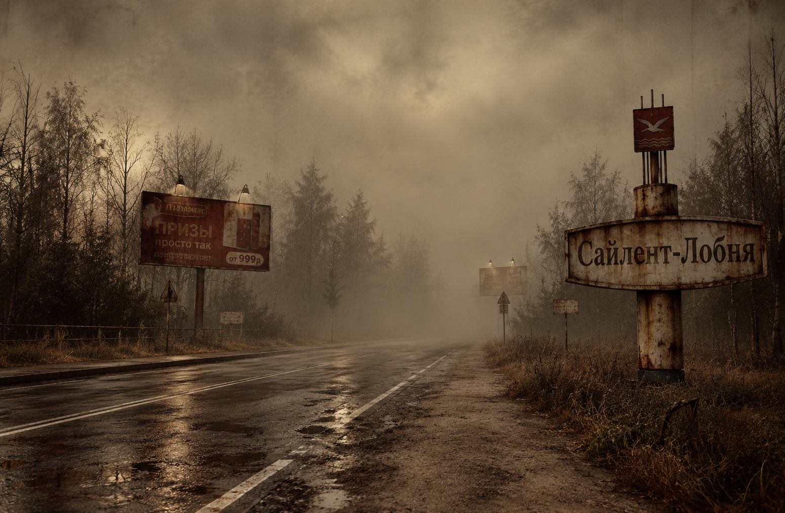

01 / ДОБРО ПОЖАЛОВАТЬ
Подмосковье. Обратная сторона.
В своих беспокойных снах
я вижу тот город, Сайлент-Лобня
Название этого города — Сайлент-Лобня. Хотя он неизвестен, это проклятое место, где когда-то были изгнаны прежние поселенцы, совершались жестокие казни, и однажды разразилась загадочная эпидемия. Город расположен вокруг Ростикса возле одноименной городу станции, густой туман из которого постоянно обволакивает близлежащую область и делает размытой реальность и сны тех, кто приезжает в город. И, по словам очевидцев, временами здесь появляются «вещи», которые не должны существовать.
МЦД-1диаметр замкнулся
∞минут до отправления
9:10на табло станции
Добро пожаловать в Сайлент-Лобню!
03 / МЕСТНЫЙ АРХИВ
Городские истории.
Без обратного адреса.
Объявления со станции, помехи в эфире и записки,
найденные между этажами.
04 / ОБРАТНАЯ ДОРОГА
Вы дома.
Наверное.
Выход в город — с обеих сторон. Обратно — ни с одной.
Вернуться к началу ↑